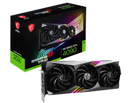

Karta graficzna (GPU)
Opis: Karta graficzna odpowiada za generowanie obrazu i jego wyświetlanie na monitorze. Jest szczególnie ważna w grach i programach graficznych. Jej cechy to ilość pamięci VRAM, taktowanie oraz wydajność. Ma ogromny wpływ na jakość grafiki i liczbę klatek na sekundę. Przykłady to NVIDIA GeForce RTX 4070, AMD Radeon RX 7800 XT czy RTX 4090.
